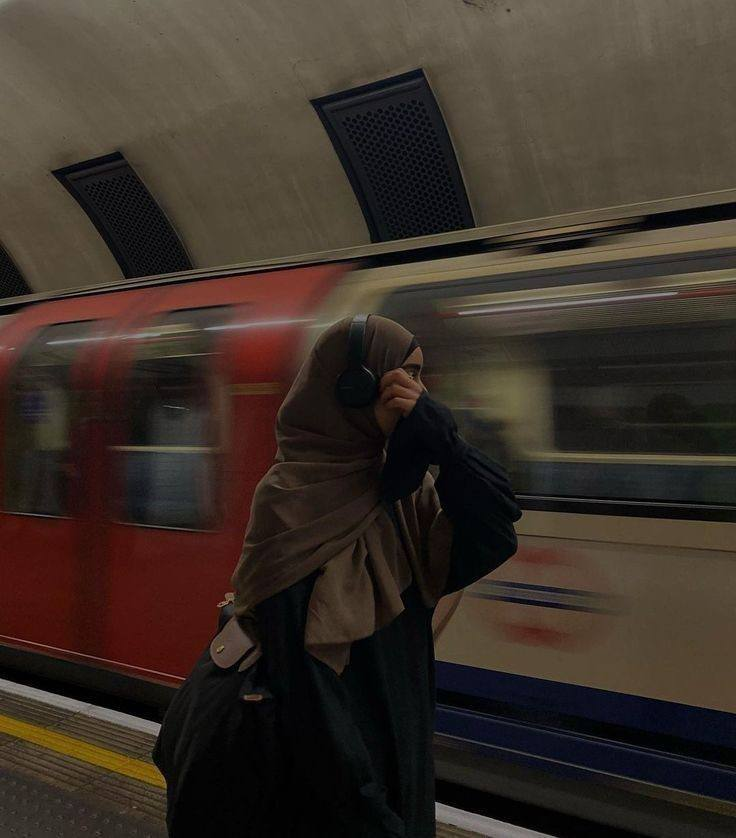

Ko'prik ustida o'sgan qizning hikoyasi. Hech kim ko'rmagan yukni bir umr ko'targan inson haqida.
Otasi aytardi: «Biz ikki dunyo uchrashgan joyda yashaymiz. Demak, sen ikkalasiga ham tegishliSan - va hech biriga ham.»
U yetti shamolli uyda tug'ilgan edi - Istanbulda, Galata ko'prigi ustidagi kichkina kvartira. Ertalab baliq isi, ho'l tosh va mis qozonchada qaynagan qahva hidi anqirdi. Onasi har tongda, hali quyosh chiqmasdan, shu qozonchani olovga qo'yardi.
Otasi eski masjidlarni ta'mirlardi - minoralarga qaytadan suv quyardi, asrlar ko'rgan gumbazlarga oltin yaltoq qaytarardi. Ko'p topmasdi. Lekin har kech u kichkina qizining qo'lini oldi va ko'prikka olib chiqdi - minoratlar orqasida quyosh so'nishini tomosha qilishga.
- Yodlab qol, - derdi u ohista. - Men yo'q bo'lganimda, shu manzaraga qarasa - men yoninda bo'laman.
Qizga yetti yosh edi. U tushunmadi. Shunchaki otasining qo'lini ushlab, suvga qaradi.
To'qqiz yoshida otasi olamdan o'tdi. Yurak. Tez. Ogohlantirmasdan.
Onasi uch kun xonasidan chiqmadi. To'rtinchi kuni - jimgina chiqdi. Jimgina mis qozonchani olovga qo'ydi. Jimgina boshiga ro'mol o'radi. Jimgina qizining qo'lini tutdi va maktabga olib bordi.
U qizining ko'z oldida hech qachon yig'lamadi. Bir marta ham. Barcha yillar davomida - ko'z oldida bir tomchi ko'z yoshi yo'q.
Faqat bir kecha qiz uyg'ondi va bir ovoz eshitdi - onasi deraza oldida turib ko'prikka qarar, yelkalari esa asta-asta silkinardi. U qizining uxlayotganini o'ylardi.
U uning hayotiga muhim narsalar paydo bo'lgandek paydo bo'ldi - sezilinarsiz. Shunchaki bir kuni o'sha ko'priqdagi uning yonida turdi. U ham suvga qarardi. U ham jim edi.
U yoza boshladi. U haqida emas - uni hali tanimasdi. Shu sukutning yonida his qilganlar haqida. Ba'zan begona odamning mavjudligi eng yaqinlarning so'zidan ancha jim va haqiqiyroq bo'lishi haqida.
Ular tobora ko'proq gaplashdilar. Muhim narsalar haqida emas - mayda-chuyda haqida. Lekin aynan mayda-chuydada asosiy narsa yashiringan edi. U bir kuni dedi:
- Quyosh nuri bor. O't nuri bor. Odamlar nuri ham bor - u eng kam uchraydi. Va eng haqiqiysi.
U javob bermadi. Faqat suvga qaradi. Lekin ichida bir narsa - siljidi.
Ancha vaqt o'tib - u shu daftarni topib o'qiganda - juda jim o'tirdi. Keyin boshini ko'tarib bo'sh xonaga baland ovozda dedi:
- Ahmoq. Sevinchni bermaydilar. Uni ko'paytiradilar - ulashganida.
Lekin u allaqachon eshita olmasdi.
Ular nihoyat to'liq gaplashdilar. So'zlar kech tunda kelardi - dunyo jim qolganda, ortiqcha hech narsa aytib bo'lmaydigan vaqtda.
U har bir xabarini saqlardi. Kelajak haqida o'ylagani uchun emas. Shunchaki ba'zi so'zlar - juda kam uchraydi, ularni yo'qotish mumkin emas.